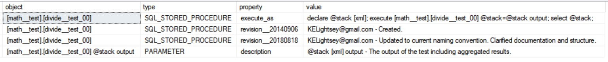

[unit_test_framework]
back to top...
While Unit Testing is a common practice in most modern programming languages, SQL practitioners do not commonly create or use Unit Tests, nor there does not seem to be an accepted standard practice for creating and using Unit Tests in the SQL Development community. A great part of the reason for this is the difficulty involved in creating and maintaining Mock Data.
"There’s so much talk about the system. And so little understanding." - Robert M. Pirsig, Zen and the Art of Motorcycle Maintenance.
This Article Introduces:
- Techniques and a framework for Unit Testing using SQL stored procedures and transactions with no external framework or Mock Data required.
- A mechanism for utilizing unit tests as a test harness for production code.
- A method of programmatically running unit tests and aggregating the results as a means of integration testing.
In computer programming, unit testing is a software testing method by which individual units of source code, sets of one or more computer program modules together with associated control data, usage procedures, and operating procedures, are tested to determine whether they are fit for use. wikipedia.
|
[why_unit_test]
back to top...
Unit Testing objects accomplishes several important tasks:
-
A well written Unit Test serves as an acceptance test for an object. If the object passes the (properly written and approved) unit test, it can be said with some certaintly that the object meets requirements.
-
A well written Unit Test allows the object under test to be readily refactored. The ability to refactor objects almost at will is a core tenet of modern programming. However, without a unit test to validate existing functionality, and that the existing functionality is not compromised by the refactoring, refactoring is rarely performed. Unit tests allow an object to be written as simply as possible (see YAGNI) to meet the current requirements, with the knowledge that it can easily be refactored in the future to meet additional requirements as long as the existing unit tests continue to pass.
-
Creating Unit Tests for procedures limits complexity without artificial constraints. If it is too complex to Unit Test, it is too complex. I've often worked on teams where artificial constraints on complexity such as number of lines of code are implemented. These are invariably flawed.
For example; consider the single line SQL statement:
select [person].[first_name],[person].[last_name],[person].[id] from [person].[data] as [person]
join [person_account].[join] as [person_account]
on [person_account].[person_id] = [person].[id] join [account].[data] as [account] on [account].[id] = [person_account].[account_id];
This can be reformatted into a more readable but eight times more lengthy form as:
select [person].[first_name]
, [person].[last_name]
, [person].[id]
from [person].[data] as [person]
join [person_account].[join] as [person_account]
on [person_account].[person_id] = [person].[id]
join [account].[data] as [account]
on [account].[id] = [person_account].[account_id];
Clearly the second format is (typically) more legible, but an artificial constraint on the number of lines of code in a procedure to limit complexity would force developers to favor the first format. This would actually create MORE complexity! Rather than use artificial constraints, a Unit Test effectively reduces the complexity in a target method (procedure, function, view, etc.) by reducing the amount of functionality that it may contain before it becomes overly difficult to Unit Test. My experience is that this is NOT a linear increase!
If you are making an effort to unit test all your methods, you automatically begin thinking of them in terms of functional modules and simplicity or your unit tests grow increasingly to consume the major of your development time. Conversely, methods that are specific and modular are relatively easy to test, especially if you use a template and framework for testing as is presented here.
|

[best_practice]
back to top...
There are some generally accepted best practices for unit tests. Some of these make sense for use with SQL, some we might take some liberty with. I generally try to follow best practices unless I have a clear argument for doing something different.
"We've always done it that way," is not a clear argument.
[3rd_law__simplicity] - If a method is too complex to effectively unit test, it is too complex.
-
Unit tests are a contract between the business unit and operations. As such, the business unit and its representatives should be fully aware of the unit tests and, preferably, should approve the individual tests in the same manner that a purchaser would approve a contract from a seller.
-
Once the tested object for a unit test is promoted into production, the unit test itself must never be modified. Additional functionality should be tested using additional tests. The only exception to this is when the business requirement changes such that the test itself is no longer testing for a valid condition. In the case where a unit test is modified, all tests within that test method must be re-verified. Because of this it is generally best to limit the number of individual tests within a unit test method.
-
Unit tests should not accept parameters that indicate state. Tests should not depend on data passed in. They should be consistent and declarative. The only parameters a unit test should accept are those which output the results of the test. The test output should be in a form that allows programmatic evaluation, i.e.; no human intervention should be required to determine if a test passed or failed. Additionally, the output should be in a form that can be stored in whole part such that it may serve as a documented event for the purposes of compliance, auditing, fault or performance analysis, etc. The only parameters a unit test should accept are those which output the results of the test. The test output should be in a form that allows programmatic evaluation, i.e.; no human intervention should be required to determine if a test passed or failed. Additionally, the output should be in a form that can be stored in whole part such that it may serve as a documented event for the purposes of compliance, auditing, fault or performance analysis, etc.
-
All required business functionality should be evaluated thoroughly by a unit test. If a method is a big ball of mud, God object, or spaghetti code, and it is excessively difficult or impossible to unit test, it should be refactored into objects which can be tested.
-
Data repositories such as tables should not be tested, rather the methods that access these should be tested. This allows the data repository to be refactored to meet business and technical requirements and to scale or evolve to adapt to these changing requirements. In this respect, a series of unit tests that succeed if a repository object in a "secure tier" cannot be accessed from a "public tier" would be appropriate. These tests would fail if the secure tier is accessible directly from the public tier. Only specific accessor and mutator methods should typically have access to the secure tier, and these should be used for public access. (see; facade pattern, adapter pattern)
-
All required business functionality should be evaluated thoroughly by a unit test. If a method is a big ball of mud, God object, or spaghetti code, and it is excessively difficult or impossible to unit test, it should be refactored into objects which can be tested.
-
One test per unit test. Each test object should only contain one test. I've found this to be a burdensome requirement when you have a lot of little things you want to test for. As long as the test object itself is clear I don't mind grouping a few things in a single test. I'll cover reporting with the @output parameter.
Regardless, if I test for multiple items in the same unit test procedure, those items will be closely related and, as noted, will be clear in the reporting.
At some point you have to shoot the engineers and start production.
|
[building_a_unit_test]
back to top...
SQL transactions.
Do you trust SQL? Before you begin unit testing with SQL, you should understand it well enough to trust it. This method of testing relies on SQL transactions. If you do not understand SQL transactions you will not understand nor will you trust this test mechanism.
Note:
Normal error handling techniques are not included in the test objects for clarity.
The process demonstrated here assumes implementation by an experienced professional aware of the application on which it is implemented. Examples include, but are not limited to, avoiding external access such as sending objects to a queue or via smtp. In other words; common sense is assumed to prevail.
Naming Convention.
By convention, I prefer to name the test procedure as;
[<schema>__test].[<object>_test__<meaningful_designator>]
where the object to be tested is;
[<schema>].[<object>]
For example, to test a procedure [account].[get_primary] I may create test procedures named;
[account__test].[get_primary__test_by_id]
[account__test].[get_primary__test_by_name]
This technique of grouping the tests by convention in schemas named with the "__test" extension facilitates automated testing (see automated unit testing below). The "__test_<meaningful_designator>]" in the object name allows multiple tests to be created for a single object but still grouped by the schema and object name. This will become more apparent in the section on automated unit testing.
Aggregation of results using XML
I am an avid user of XML and the XQuery language for building ad hoc, heterogenous data. It can be bulky, overly complex, and the implementation leaves a lot to be desired, but used well it can still be a powerful tool. I am relatively sure that JSON use is in my future now that, as of SQL Server 2016, SQL Server allows the use of JSON, and JSON seems to be rapidly overtaking the use of XML as a common interchange format.
For now, this unit test mechanism uses XML and XQuery heavily to achieve the desired result.
You build bridges, John. You have to go where the rivers are. Helena Patterson, The Ghost and The Darkness.
|

[documentation__execute_as]
back to top...
Note the code here, which is all that is in the static comments in the header of the stored procedure. Running it extracts the documentation for the stored procedure from extended properties.
Documenting your objects in this manner allows the documentation to be queried or extracted programmatically. Additionally, as it is part of the object, it is more likely to get updated than documentation out on the network somewhere. This is my preferred manner of documenting objects.
The secret of all victory lies in the organization of the non-obvious. Marcus Aurelius.
|
|
--
-- RUN SCRIPT FOR DOCUMENTATION
------------------------------------------------
declare @schema [SYSNAME] = N'math__test',
@object [SYSNAME] = N'divide__test_00';
select Quotename(object_schema_name([extended_properties].[major_id]))
+ N'.' + case when Object_name([objects].[parent_object_id]) is not null then
Quotename(Object_name([objects].[parent_object_id])) + N'.' + Quotename(Object_name([objects].[object_id])) else
Quotename(Object_name([objects].[object_id])) +
case when [parameters].[parameter_id] > 0 then N' ' + coalesce( [parameters].[name], N'') else N'' end + case
when
columnproperty ([objects].[object_id], [parameters].[name], N'IsOutParam') = 1 then N' output' else N'' end end
as
[object]
, case
when [extended_properties].[minor_id] = 0 then [objects].[type_desc]
else N'PARAMETER'
end
as [type]
, [extended_properties].[name]
as [property]
, [extended_properties].[value]
as [value]
from [sys].[extended_properties] as [extended_properties]
join [sys].[objects] as [objects]
on [objects].[object_id] = [extended_properties].[major_id]
join [sys].[schemas] as [schemas]
on [schemas].[schema_id] = [objects].[schema_id]
left join [sys].[parameters] as [parameters]
on [extended_properties].[major_id] = [parameters].[object_id]
and [parameters].[parameter_id] = [extended_properties].[minor_id]
where [schemas].[name] = @schema
and [objects].[name] = @object
order by [parameters].[parameter_id]
, [object]
, [type]
, [property];
|
[math__test__divide__test_00]
back to top...
[math__test].[divide__test_00] will be used as the test to guide our development of the desired business procedure, [math].[divide]. This is an example of Test Driven Development.
Before you go any further, take a look at the test [math__test].[divide__test_00]. The first test is in the code snippet below. Inspect each of the tests in the test procedure.
Note:
- I am assuming that you can read code such as "if object_id(N'[math].[divide]', N'FN') is null" and understand that the code is doing exactly what this test states it is for (based on @test_name), "N'check_for_target_method_exist'". This is an example of [6th_law__manifest] - Good software should be self-documenting.
- Refer to the presentation on XQuery if you have questions on how the data is being aggregated for the output parameter @test_stack. However, again, I have attempted to write the software in such a way that it should be apparent what is being done without necessarily understanding the mechanics of the language. Try reading the code as if it were an English language sentence and see if you can identify what is being accomplished.
- The demonstration method [math].[divide] does not necessarily perform in a mathematically correct manner. I am only using it here to demonstrate how a developer would use a unit test which the business has approved to develop a method which passes those requirements. Don't get all caught up in the technical details and miss the point! Instead, take the techniques demonstrated here and build a series of tests for a method that you are working with, implementing tests that test for required behavior.
Ask yourself some questions:
- Without viewing the actual business method proposed, [math].[divide], can you tell what business functionality [math].[divide] is required to exhibit by only looking at this test, [math__test].[divide__test_00]?
- Is this test a clear and consistent definition of what is required in the business method?
- What things are NOT required by this test?
- Are you required to implement large numbers?
- If you write a method, [math].[divide], which meets the requirements of this test (all tests pass), have you done your job as a developer, and have the business requirements been met?
If you are working through this presentation you should copy the code to your development database and created it now. Note that the script has a use [<database_name>] statement to keep you from inadvertently creating it in [master] (ask me how I know that can happen...). Just change the database name to an appropriate test database.
|
|
--
-------------------------------------------
begin
select @test_sequence = 0
, @test_name = N'check_for_target_method_exist'
, @test_description = N'Check to see if the target method exists.'
, @test = @test_prototype;
set @test.modify(N'replace value of (/*/@test_sequence)[1] with sql:variable("@test_sequence")');
set @test.modify(N'replace value of (/*/@test_name)[1] with sql:variable("@test_name")');
if (select @test.value(N'(/*/description/text())[1]', N'[nvarchar](max)')) is null
set @test.modify(N'insert text{sql:variable("@test_description")} as first into (/*/description)[1]');
else
set @test.modify(N'replace value of (/*/description/text())[1] with sql:variable("@test_description")');
--
if object_id(N'[math].[divide]', N'FN') is null
begin
select @message = N'Target function does not exist. No further testing will be performed.'
, @return_code = 1;
set @test.modify(N'insert text {sql:variable("@message")} as last into (/*)[1]');
set @test_stack.modify(N'insert sql:variable("@test") as last into (/*)[1]');
set @test_stack.modify(N'replace value of (/*/@return_code)[1] with sql:variable("@return_code")');
end;
else
begin
--
-- the target method existed, so include that as the first test in the stack
-------------------------------------
set @test.modify(N'replace value of (/*/@actual)[1] with sql:variable("@pass")');
set @test_stack.modify(N'insert sql:variable("@test") as last into (/*)[1]');
end;
end;
|
[running__math__test__divide__test_00]
Refer to the section on documentation to get the execute_as documentation for the test.
Running [math__test].[divide__test_00] now will give this output. It may seem odd running a test when the method under test does not even exist, but that will become important later, in the section on automated unit testing. With careful consideration, it makes perfect sense for a test to first determine if the method to be tested even exists!
|
[create__math__divide]
Create [math].[divide] using this code and rerun [math__test].[divide__test_00]. You should now get this output. You have now passed two of seven required tests.
- Your target method exists.
- Your target method returns a numeric value.
|
|
if Object_id(N'[math].[divide]', N'FN') is not null
drop function [math].[divide];
go
create function [math].[divide] (@numerator [int]
, @denominator [int])
returns [int]
as
begin
return 1;
end;
go
|
[update__math__divide]
Update [math].[divide] using this code and rerun [math__test].[divide__test_00]. You should now get this output. You have now passed four of seven required tests.
- Your target method exists.
- Your target method returns a numeric value.
- A zero numerator returns 0.
You still need to handle NULL and 0 values as required by the business requirements for the method.
|
|
if Object_id(N'[math].[divide]', N'FN') is not null
drop function [math].[divide];
go
create function [math].[divide] (@numerator [int]
, @denominator [int])
returns [int]
as
begin
return @numerator / @denominator;
end;
go
|
[update__math__divide]
Update [math].[divide] using this code and rerun [math__test].[divide__test_00]. You should now get this output. You have now passed six of seven required tests, but you still need to handle divide by zero.
|
if Object_id(N'[math].[divide]', N'FN') is not null
drop function [math].[divide];
go
create function [math].[divide] (@numerator [int]
, @denominator [int])
returns [decimal](10, 6)
as
begin
declare @return [decimal](10, 6);
if @numerator is null
or @denominator is null
set @return = 0;
else
set @return = Round(Cast (@numerator as [float]) / Cast(@denominator as [float]), 6);
return @return;
end;
go
|
[update__math__divide]
Update [math].[divide] using this code and rerun [math__test].[divide__test_00]. You should now get this output. You have now passed all seven of seven required tests.
|
|
if Object_id(N'[math].[divide]', N'FN') is not null
drop function [math].[divide];
go
create function [math].[divide] (@numerator [int]
, @denominator [int])
returns [decimal](10, 6)
as
begin
declare @return [decimal](10, 6);
if @numerator is null
or @denominator is null
or @denominator = 0
set @return = 0;
else
set @return = Round(Cast (@numerator as [float]) / Cast(@denominator as [float]), 6);
return @return;
end;
go
|
[refactoring]
back to top...
Now that you have met the requirements of the test, you should stop. That is right. You should stop writing code. Of course you should clean up after yourself and document the object as required by professionalism and/or the shop practices where you work, but you should studiously avoid the tendency to add functionality that is not stated within the business requirements. This is a mantra from Agile development termed, YAGNI, You ain't gonna need it.
Because you have written a test that completely defines the requirements of the method, future programmers (including yourself next week, next month, or next year), can easily rewrite the method to add new functionality as required, improve the performance, etc. As long as the updated method still meets the requirements of this test the code can be refactored at will.
The ability to refactor code at will is effectively the software equivalent continuous improvement (see: [engineering]).
When you think of using the test in this manner, several things become obvious:
-
The test MUST be checked into the code repository along with the tested object. In the future, if this test is not available, the developer who needs to modify the tested object will have no way of knowing if her modifications have broken existing business functionality without running, or replicating, this test. Just check it in.
-
The test MUST be fully self contained, without requiring external input parameters. Who knows what the environment will look like a year from now or if the developer who needs to run the test knows under what conditions it must be run. It is best that the test be fully self contained.
-
It is preferable that the unit test be promoted to production along with the tested code. This will allow the unit test to be used as a test harness. This can be particularly useful after a new installation, upgrade, or during trouble shooting.
|
[testing_a_destructive_method]
back to top...
The mechanism for testing a descructive method, one that modifies data, is reminiscent of the outdoors mantra of, Take only pictures, leave only footprints. It is important that you disturb the underlying system as little as possible. It is possible to do this using transaction isolation levels.
Note; using transaction isolation levels as noted here can cause performance issues. These techniques are recommended for test environments, for post install or upgrade evaluation, and for trouble shooting, not for inline production use. If you use them inline with production, or assume that they will be used as such and therefore misunderstand the purpose, it is because you do not understand the intent here. That is on you. I do not design or write code to be fool proof because I do not believe fools should be working on SQL Servers. Additionally, I am decidedly not a fool, so I have no idea how they think, so I cannot really write code that would work for them. Undertake these techniques only if you understand them as well as their intended use and potential consequences. Enough said.
Those are my principles, and if you don't like them... well, I have others. - Groucho Marx.
|
[create__math__secure__data]
back to top...
Create [math__secure].[data] and a mutator method, [math].[set]. Note by inspection that [math__secure].[data] contains the results of the formerly tested method, [math].[divide], and [math].[set] inserts data into the table.
We want to develop a test for [math].[set]. However, we do not want to alter the contents of the table, [math__secure].[data] with the results of tests.
Note that this is an implementation of the vault design pattern.
|
|
use [chamomile];
go
if schema_id(N'math__secure') is null
execute (N'create schema math__secure');
go
--
if Object_id(N'[math__secure].[data]', N'U') is not
null
drop table [math__secure].[data];
go
--
create table [math__secure].[data]
(
[id] [int] identity(1, 1)
, [numerator] [int]
, [denominator] [int]
, [result] [decimal](10, 6)
, [timestamp] [datetime] default (
current_timestamp)
);
go
|
[create__math__set]
|
|
if Object_id(N'[math].[set]', N'P') is not null
drop procedure [math].[set];
go
--
create procedure [math].[set] @numerator [INT]
, @denominator [INT]
, @id [INT] output
as
begin
--
-- create a unique transation to avoid issues during parallel operations
-------------------------------------------
declare @transaction [NVARCHAR](32) = right(Lower(Db_name()) + N'_'
+ Lower(object_schema_name(@@procid)) + N'_'
+ Lower(Object_name(@@procid)) + N'_'
+ Cast(Round(Rand()*100000, -1) as [SYSNAME]), 32);
--
-- note that a transaction isn't necessarily required here, but it is shown
-- to demonstrate the correct method for unit testing a mutator that includes
-- declared transactions
begin try
-- checking @@trancount is optional as this method will ONLY rollback or commit
-- it's own transaction!
if @@trancount = 0
begin transaction @transaction;
begin
insert into [math__secure].[data]
([numerator]
, [denominator]
, [result])
values (@numerator
, @denominator
, [math].[divide] (@numerator, @denominator));
--
set @id = Scope_identity();
end;
--
-- commit ONLY your own transaction!
-------------------------------------------
if exists (select *
from [sys].[dm_tran_active_transactions]
where [name] = @transaction)
commit transaction @transaction;
end try
begin catch
--
-- rollback ONLY your own transaction!
-------------------------------------------
if exists (select *
from [sys].[dm_tran_active_transactions]
where [name] = @transaction)
rollback transaction @transaction;
end catch;
end;
go
|
[automated_unit_testing]
back to top...
Automated testing can be implemented if the conventions defined here are followed. The most important two are naming, grouping tests in schemas named with the "
__test" extension, and the use of the
@output [xml] parameter with defined nodes.
Naming convention. Using a naming convention for tests as [<schema>__test].[<object>__test_<meaningful_designator>] where [<schema>].[<object>] is the object to be tested allows security constraints as well as ready identification of tests for specific objects.
Defined @output [xml] parameter. Implementation of an @output [xml] parameter allows automated testing and aggregation of results.
Implementing a test runner such as
[master].[dbo].[sp__chamomile__run_test] allows tests to be run programmatically in any database when the conventions above are followed.
|
[unbreakable_code]
back to top...
unit_test__unbreakable_code.sql.
When the above design mechanism has been implemented, database or server triggers can be used to implement a technique I call unbreakable code. Essentially I can guarantee that, once implemented with the design constraints stated here, the business functionality cannot be broken. This does not include intential vandalism of course. Someone that intentionally disables a trigger or constraint to allow them to break or disable functionality.
|
[download_sql_script]
back to top...
Download sql scripts. The presentation steps you through these, but here are the links to download them as a whole:
math__test.set_00.sql
math.set.sql
unit_testing.sql
master.dbo.sp__chamomile__run_test.sql
unit_test__unbreakable_code.sql
You build bridges, John. You have to go where the rivers are. Helena Patterson, The Ghost and The Darkness.
|

[reference]
back to top...
- Unit testing - Unit Testing is a software testing method by which individual units of source code, sets of one or more computer program modules together with associated control data, usage procedures, and operating procedures, are tested to determine whether they are fit for use.
- SSDT _ Verifying Database Code by Using SQL Server Unit Tests
- Unit Testing in SSDT - Getting Started with SQL Server Database Unit Testing in SSDT.
- tSQLt - Database Unit Testing Framework for SQL Server
- RedGate - Write unit tests for SQL Server databases in SQL Server Management Studio
- SQLUnit - SQLUnit is a regression and unit testing harness for testing database stored procedures.
- Unit testing
- Verifying Database Code by Using SQL Server Unit Tests
- Getting Started with SQL Server Database Unit Testing in SSDT
- tSQLt Database Unit Testing Framework for SQL Server
- RedGate
- SQLUnit
Tell me and I forget. Teach me and I remember. Involve me and I learn. Benjamin Franklin.
|
|